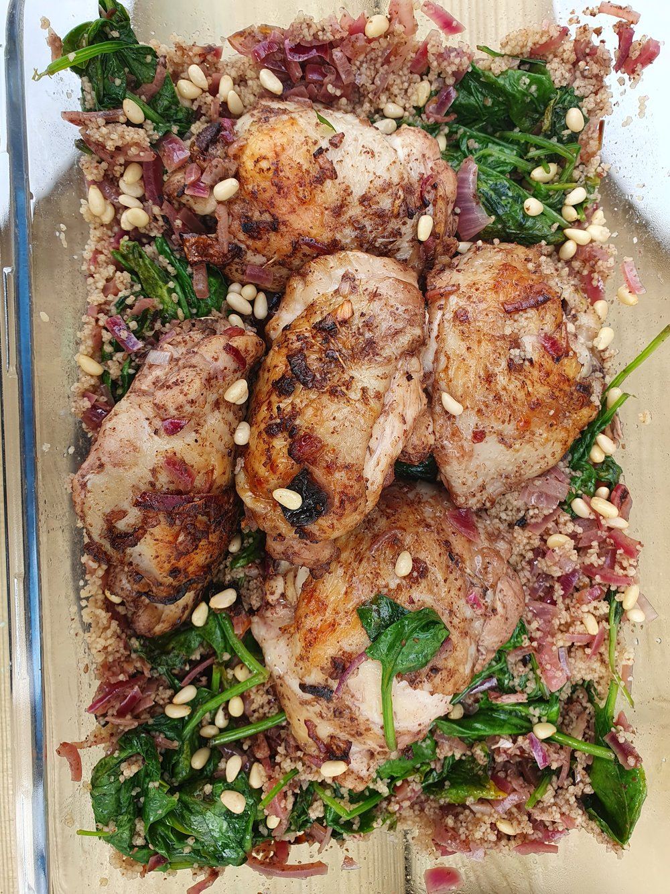

Recipe 14 Mussakhan with Couscous and Spinach
I bought sumac because I didn’t have it in my spice collection. This was the first thing I made

14.1 Ingredients
Feeds a family, takes 90 mins including cooking
- 1kg chicken thighs
- 3 large red onions (around 600g), finely diced
- Juice of 2 lemons (4tbsp)
- 4 tbsp vegetable oil
- 2 tbsp sumac
- 6 garlic cloves (crushed)
- 1 tsp ground cumin
- 1 tsp ground pimento (allspice)
- 1/2 tsp ground cinnamon
- 200g couscous
- 240g baby spinach leaves
To serve
- pine nuts of crushed cashews
- chilli sauce (optional)
14.2 Method
- Set oven to 200°C fan assisted
- Dice onions and place in a large ovenproof dish. Add lemon juice, oil, sumac, garlic, cumin, pimento and cinnamon. Stir
- Add chicken thighs, mix around so they are coated in the spices. Arrange skin side up on top of onions
- Cook in oven for 1 hour, turning chicken and stirring onions twice during cooking
- Remove from oven, place chicken on a plate temporarily, then pour cooking liquid and onions into a sieve, collecting the cooking liquid in a container underneath.
- Add spinach leaves to the (now empty) oven dish, add onions on top and then the chicken. Put back in oven while you deal with the couscous
- Measure volume of cooking liquid and make up to 200 mls with water. Bring to boil in a small saucepan, covered. When it boils take off the heat and add couscous. Stir, put lid on and leave for around 7 mins
- Fluff the couscous with a spoon, check it’s cooked. Remove the chicken, onions and spinach from oven. Place the chicken back on the plate temporarily. Add couscous to the (now wilted) spinach and onions, stir. Place chicken back on top for serving
- Sprinkle with nuts and serve at the table!